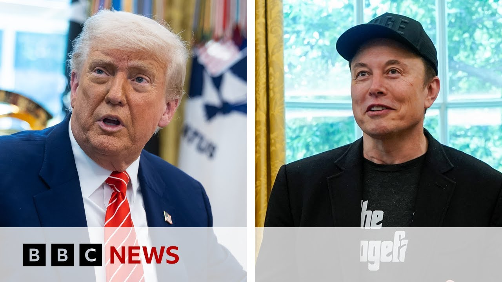

【埃隆·马斯克称唐纳德·特朗普的税收法案为“令人作呕的恶行” | BBC新闻】
Summary: The article discusses the criticality of Donald Trump's spending bill, divisions among Republicans, and Elon Musk's vocal opposition, which risks deepening party rifts over the bill's size and impact on national debt and social programs.
摘要： 文章讨论了唐纳德·特朗普支出法案的重要性、共和党内部的分歧，以及埃隆·马斯克的公开反对，这可能会加剧党内对该法案规模及其对国家债务和社会项目影响的争议。

⏱️ Estimated Reading Time: 8 min
📚 高考3500生词 📚 雅思生词 📚 托福生词 📚 GRE生词
Speak to Julia Manchester, national political reporter at the Hill.
与《国会山报》全国政治记者朱莉娅·曼彻斯特对话。
Julia, welcome here to the program in terms of people around the world watching uh this bill.
朱莉娅，欢迎来到节目，谈谈世界各地关注这一法案的人们。
Explain to them why it is so critical for Donald Trump this spending bill.
向他们解释为什么这一支出法案对唐纳德·特朗普如此关键。
Well, it's critical because this is Donald Trump's legislative agenda.
这很关键，因为这是唐纳德·特朗普的立法议程。
So if you've watched the past 100 to 200 days of his second administration, you have seen President Trump sign a number of executive orders and executive actions really trying to implement his agenda overall in the US.
如果你关注了他第二任期过去100到200天的动态，你会看到特朗普总统签署了一系列行政命令和行政行动，试图在美国全面推行他的议程。
When it comes to a number of areas like the border, for example, however, he can't do all of this through executive orders and executive actions.
然而，在边境等许多领域，他无法仅通过行政命令和行政行动完成所有目标。
We know that Congress controls the power of the purse to uh allocate funding.
我们知道国会掌握着拨款权。
He needs Congress.
他需要国会。
And luckily for President Trump, Republicans control both the House and the Senate.
对特朗普总统来说幸运的是，共和党控制了众议院和参议院。
So at the surface level, you would think, great, President Trump would easily be able to pass his his legislative agenda through Congress, extend those 2017 Trump tax cuts, for example, allocate more money to the border.
因此，表面上你会认为，特朗普总统可以轻松通过国会推动他的立法议程，例如延长2017年特朗普减税政策，或为边境分配更多资金。
However, what we're seeing is there are divisions within the uh House within House Republicans and Senate Republicans about how big this bill should be or how small this bill should be.
然而，我们看到众议院和参议院的共和党人在法案规模上存在分歧。
A number of Republicans have faced concerns over potential cuts to Medicaid, for example, a very crucial government program that a lot of Americans depend on.
许多共和党人对可能削减医疗补助等关键政府项目表示担忧，许多美国人依赖这些项目。
However, on the other side of this, you have a number of fiscal conservative hawks, including President Trump's now former adviser, Elon Musk, who is speaking out against this bill and really uh creating a lot of turmoil among Republicans on Capitol Hill when they're already deeply divided on this legislation.
另一方面，包括特朗普前顾问埃隆·马斯克在内的财政保守派强烈反对该法案，加剧了本已分歧严重的共和党内部的动荡。
You mentioned Elon Musk and we're showing pictures of the two of them in the Oval Office.
你提到了埃隆·马斯克，我们正在展示他们在椭圆形办公室的合影。
He has increasingly been posting on social media what he thinks about this spending bill.
他越来越多地在社交媒体上表达对该支出法案的看法。
And in terms of the antagonism, it is growing.
这种对立情绪正在加剧。
And his central theme and thrust is the size of the potential growth in national debt and pointing out today the amount of interest the administration is already paying on the national debt.
他的核心观点是国家债务可能增长的规模，并指出政府目前已在为国家债务支付巨额利息。
And that's set to increase even further if this goes through.
如果法案通过，这一数字将进一步增加。
That's correct.
没错。
And you know, these comments really pose a risk, I think, to the future of this legislation because what Elon Musk is doing by raising these concerns about the national debt is sort of uh validating a number of remarks and concerns we've heard from fiscal hawks in the House and the Senate, including Senator Rand Paul from Kentucky, who has really gone head-to-head with the administration on this legislation.
马斯克的言论可能危及法案的未来，因为他关于国家债务的担忧印证了参众两院财政鹰派的观点，例如肯塔基州参议员兰德·保罗，他在这项立法上与政府针锋相对。
It's also deeply ironic that Elon Musk is doing this days after leaving the White House because we know that President Trump literally traveled to Capitol Hill last month to meet with House Republicans to essentially whip them into formation to vote for this legislation regardless of what their concerns are.
讽刺的是，马斯克在离开白宫几天后这样做，而特朗普上个月曾亲自前往国会山要求众议院共和党人无视顾虑支持该法案。
So he is Elon Musk in making these comments is risking or you know could very well be deepening these divisions among Republicans when it comes to the size and scope of this legislation.
因此，马斯克的言论可能加剧共和党在该法案规模和范围上的分歧。
As you're talking we're just showing the latest Elon Musk tweet the camera just panning out so we get it in stages.
在你谈话时，我们正在展示马斯克的最新推文，镜头逐步拉远。
But let me ask you because you talked there about Donald Trump only a short while ago strongarming getting it through the House, but there is growing opposition in the Senate.
但我想问，你提到特朗普不久前刚强行推动法案在众议院通过，但参议院的反对声音正在增加。
You mentioned Ran Paul. How many more senators are coming on board and are being public about their opposition?
你提到了兰德·保罗。还有多少参议员公开表示反对？
Well, there's opposite opposition on a number of fronts in the Senate.
参议院的反对来自多个方面。
You have Ran Paul, Florida Senator Rick Scott, for example, some of these fiscal conservatives who think the bill doesn't cut enough, that it's too big, that they it needs to be slimmed down.
例如兰德·保罗和佛罗里达州参议员里克·斯科特等财政保守派认为法案削减力度不足、规模过大，需要缩减。
Um Ran Paul really the face of that opposition.
兰德·保罗是反对派的代表人物。
But then on the other hand, you have a number of Republicans who think it cuts too much from programs like Medicaid, for example, or food assistance programs.
另一方面，许多共和党人认为法案过度削减了医疗补助或食品援助等项目。
You know, remember in just over a year, a number of these Senate Republicans and all House Republicans will be facing re-election and Democrats have already begun to roll out attacks saying that this bill would cut these government assistance programs.
别忘了，一年多后这些参议员和众议员将面临连任竞选，而民主党已开始攻击该法案削减政府援助项目。
So, Republicans, um, more moderate Republicans facing reelection also find themselves on the defense on this bill for a completely other reason or, um, I guess in opposition, I should say, for a completely other reason than, um, Ran Paul might, for example.
因此，面临连任的温和派共和党人也因不同原因反对该法案，例如与兰德·保罗立场不同的理由。
Um, ironically, you also have Missouri Senator Josh Holly, a major conservative, who's speaking out against this bill.
讽刺的是，密苏里州参议员乔希·霍利作为主要保守派也公开反对该法案。
Remember, a number of these deeply Republican states, number of those constituents also depend on these government assistance programs.
要知道，许多深红州的选民也依赖这些政府援助项目。
Final quick thought, because today we've seen those steel and aluminium tariffs double to 50%.
最后快速提一下，今天钢铁和铝关税已提高至50%。
Today is also the day where countries best offer were supposed to be lodged at the White House around the tariffs he introduced around the world.
今天也是各国就全球关税问题向白宫提交最终方案的日子。
So, are we on the brink of the pause being unpaused?
那么，暂停状态是否即将结束？
Well, we'll have to see.
我们还需观望。
Um, look, I think the administration is certainly looking to use the steel and aluminum uh tariffs as leverage with the um, you know, the negotiations on tariffs.
政府显然希望将钢铁和铝关税作为谈判筹码。
We know that a lot of the uh, steel aluminum manufacturing industry here in the United States is very happy about these tariffs, but the administration is also facing pressure from other industries and other American um, I I guess interest groups, etc. over these tariffs.
美国钢铁和铝制造业对此表示欢迎，但政府也面临其他行业和利益集团的压力。
So, we could potentially see um an unpause at some point, but the pressure is really
因此，我们可能会看到暂停状态结束，但压力确实很大。